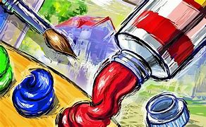
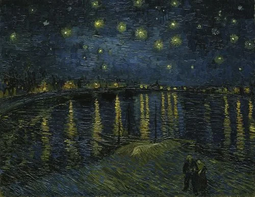
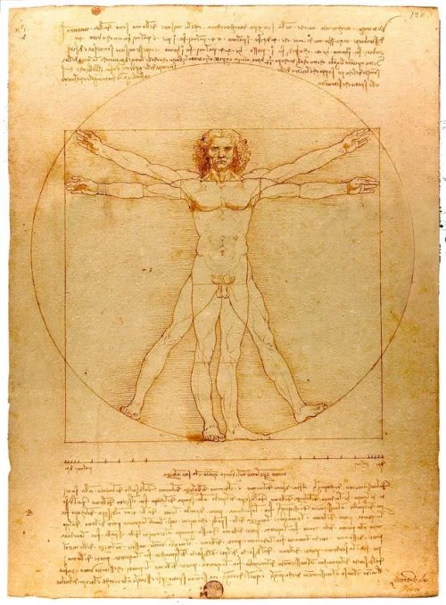
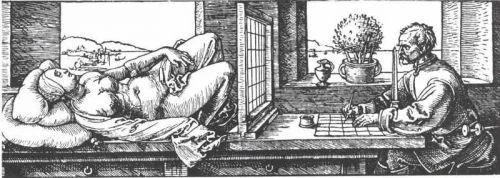
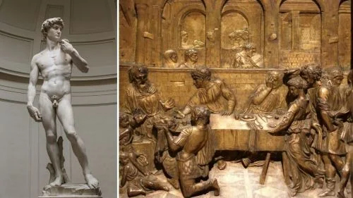

El significado del arte suele ser culturalmente específico, compartido entre los miembros de una sociedad determinada y dependiente del contexto cultural. El propósito de las obras de arte puede ser comunicar ideas políticas, espirituales o filosóficas, crear un sentido de belleza (ver estética), explorar la naturaleza de la percepción, por placer, o generar emociones fuertes. Su propósito también puede ser aparentemente inexistente.

TIPOS DE ARTES QUE EXISTEN
1.-PINTURA
La pintura es el arte de realizar imágenes con pigmentos de color sobre superficies bidimensionales.
Por ejemplo, la pintura sobre lienzo o la pintura mural. Se divide en dos grandes tipos: la pintura figurativa y la pintura no figurativa o abstracta. Forma parte de las bellas artes.
Se puede ejecutar sobre gran variedad de soportes, como piedra, tabla, tela, papel, cerámica, estuc
o, yeso, vidrio y metales. Asimismo, se expresa en gran diversidad de técnicas como óleo, temple, f
resco, témpera, acuarela, cera, pastel, acrílico, aerosol, entre otras.

2.-DIBUJO
El dibujo es un arte que consiste en el delineado de imágenes con lápiz, carboncillo o tinta sobre superficies bidimensionales. El dibujo puede ser concebido como parte de la pintura. Sin embargo,
también puede dar lugar a piezas autónomas. Forma parte de las llamadas artes plásticas o artes visuales.

3.-GRABADO
El grabado es un arte que obtiene estampas a través de la impresión de planchas de madera o metal sobre un soporte. Estas impresiones pueden repetirse muchas veces. Cada repetición tiene pequeñas variaciones y puede ser intervenida. Existen diversas técnicas de grabado, tales como la xilografía, la serigrafía, la litografía, la linografía y la monotipia.
Aunque se usa frecuentemente para reproducir imágenes, muchos artistas consideran al grabado como un arte autónomo de la pintura.

4.-CULTURAL
La escultura consiste en modelar la materia sólida para construir figuras de tres dimensiones. Las técnicas pueden ser tan variadas como el modelado en mármol o barro, el vaciado en bronce o el ensamblaje. Existen diversos tipos de escultura, tales como el relieve, la escultura en bulto redondo y la escultura cinética.
La escultura forma parte de las bellas artes y, como tal, no cumple una función práctica sino estética.

5.-FOTOGRAFICO
La fotografía es el arte de obtener imágenes de valor conceptual y estético con la cámara fotográfica. Como otras expresiones de las artes visuales, el fotógrafo aplica criterios de composición visual, como el encuadre, la iluminación, etc. La fotografía admite la intervención y manipulación de la imagen fotográfica.
Para ello, puede usar técnicas como la coloración manual, el fotomontaje, entre otras.